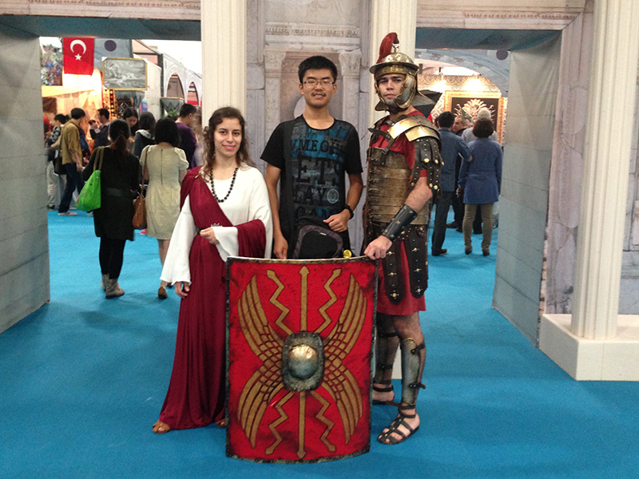
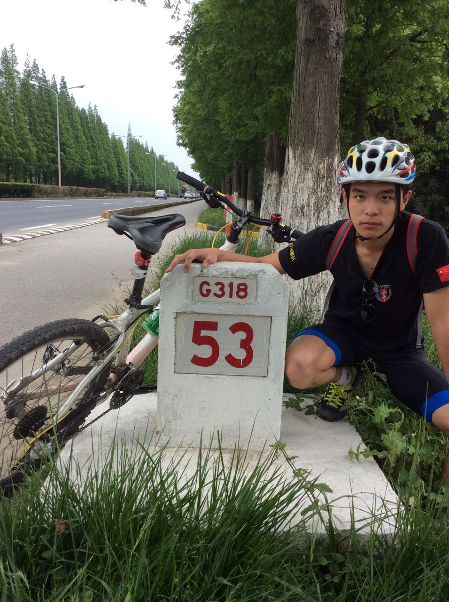
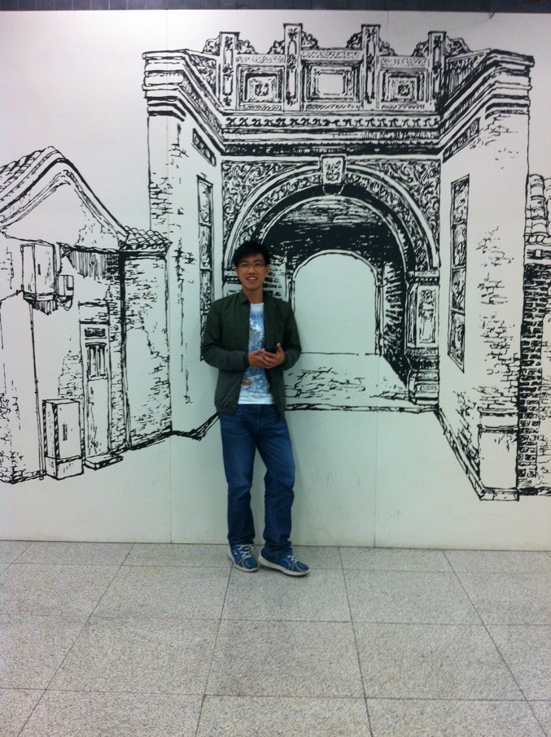

发信人: BeatboxST (ST), 信区: outdoor
标 题: 【野协团爆】【第六弹】装备部！
发信站: 饮水思源 (2014年06月10日00:02:00 星期二)
部长：陈颖君
副部长：余文澜 金垚安
screen.width - 200){this.width = screen.width - 200}">
大家好，我叫陈颖君，是新一任的装备部部长，来自生命科学技术学院，是一个上海人。

从初中开始，看着贝爷的荒野求生长大，于是对户外产生了浓浓的兴趣。最喜欢夜色下的
山和水，因为觉得那里存在着无限的可能性。接手装备部让我觉得很有压力啊，因为我其
实是个很粗心的人，但是我会做好份内的工作，核对好各个装备的数量的、还有未来的团
购和装备培训的事情。现在还有点嫩，但是相信会通过未来的一年成长起来的~
screen.width - 200){this.width = screen.width - 200}">
余文澜
Hello大家好，我是专业维修各种装备尤其是帐篷拉链的装备部副部长余文澜啦……部长让
我把个人介绍写到三位数我觉得这是完全不可能的事啦……反正多干实事是我的宗旨啦…
…有装备方面的困难就可以来找我啦……
screen.width - 200){this.width = screen.width - 200}">
上面这个还是去年技能挑战赛的时候啦……总之中间那个是我啦……
screen.width - 200){this.width = screen.width - 200}">
五一的北大比赛……虽然成绩很挫……不过很好玩……毕竟我这个背影再配上销魂的比赛
号码……真是让人无力吐槽……
screen.width - 200){this.width = screen.width - 200}">
这个图上面好像基本汇聚了装备部的核心成员包括现任部长陈颖君和前任部长郭亚舟啦…
…只不过我不太记得是哪次开会了……
金垚安
自我介绍：大家好，我是野协装备部的副部长金垚安。个人喜欢各种有趣的运动。特别的
，对户外，自行车远途情有独钟。 screen.width - 200){this.width = screen.width - 200}">
本人可以算得上是二次元党，深爱动漫，当然也有属于自己的二次元名（XXsaber）。
screen.width - 200){this.width = screen.width - 200}">
在野协的一年中，我成长了许多，野协确确实实是一个很棒的大家庭，愿在未来的未来，
能够和野协的大家携手共进，能够为装备部的建设锦上添花，更希望有更多的你加入我们
。爱野协，野协威武!
 screen.width - 200){this.width = screen.width - 200}">
王斯怡
巴黎高科卓越工程师学院大一（名字真长真高大上有没有）
爱运动，爱户外，爱音乐，爱看书,什么都挺喜欢...但！绝不宅室内。
爱野协哈哈哈
screen.width - 200){this.width = screen.width - 200}">
野协活动又多又带劲啊~技能挑战赛真是挺好玩挺大收获的~
玩过以前从没敢玩的东西，上升，速降，爬墙啊什么的。很有趣
但还是有时比较胆小吧。
愿，接下来，慢慢克服恐高，更多挑战
screen.width - 200){this.width = screen.width - 200}">
忘了说，爱好虽广，但非常讨厌游乐场！！
这是陪小伙伴进去乐园前拍的最后的微笑。。
screen.width - 200){this.width = screen.width - 200}">
风吹的很爽啊，就挺喜欢在户外走走~
空气新鲜
超舒服！
装备部是个人资强大的部门~野协的根基啊~！
超舒服~！
黄立为

黄立为 男 船建学院
喜欢：自行车 游泳 暴走大事件 水群 我是世界三大水比之首 不服的可以到群里来战
往事如烟过 一笑泯恩仇 师妹成人妻 绿帽心中留
装备部什么的最有（wu）爱（qu）了哈哈哈 爆照什么的最无聊了这尼玛写点什么呢据说要
一百字才行啊卧槽为何这么坑爹卧槽到100字了哈哈拜拜
李耀宇
 screen.width - 200){this.width = screen.width - 200}">
大电院 电气工程与自动化专业 曾在福建厦门服役两年
screen.width - 200){this.width = screen.width - 200}">
爱户外，爱自由，爱野协 大学期间在保证学业的前提下准备尽
一切人力物力好好玩
screen.width - 200){this.width = screen.width - 200}">
王妈妈的自我介绍
王妈妈曾经是一名文（er）艺（bi）青年
screen.width - 200){this.width = screen.width - 200}">
 screen.width - 200){this.width = screen.width - 200}">
直到有一天，一次偶然的机会，他知道了野协
跟着野协走了自己的第一条线
screen.width - 200){this.width = screen.width - 200}">
从此，“行诸山野立命天地”&“下包扣腰扣”这两句话，深深的镌刻在了ta的脑海里
一如野协深似海
在这里成长着
screen.width - 200){this.width = screen.width - 200}">
感动着

（注：照片上的这货不是我，我只是觉得这照片很diao而已……）
XX着。。。
screen.width - 200){this.width = screen.width - 200}">
如今，我是野协新一任定向队长
screen.width - 200){this.width = screen.width - 200}">
定向队人才济济！！！！！
真的！！
看图就知道！！！
--
※ 来源:·饮水思源 bbs.sjtu.edu.cn·[FROM: 10.184.195.186]
|